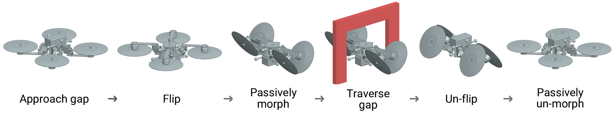
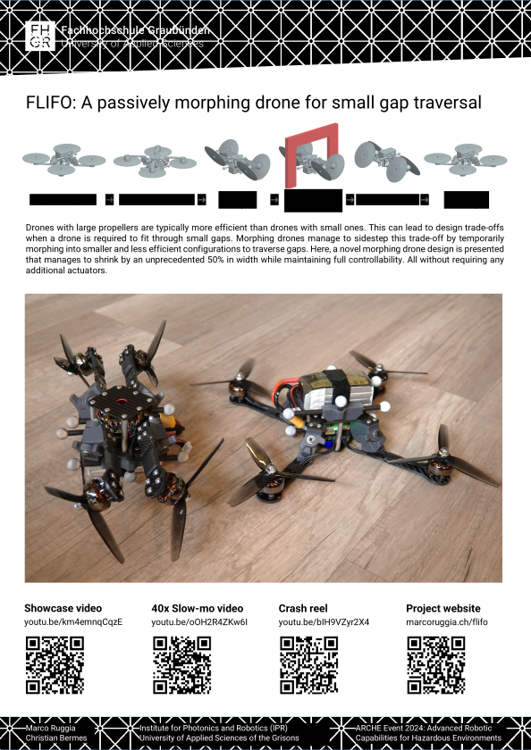
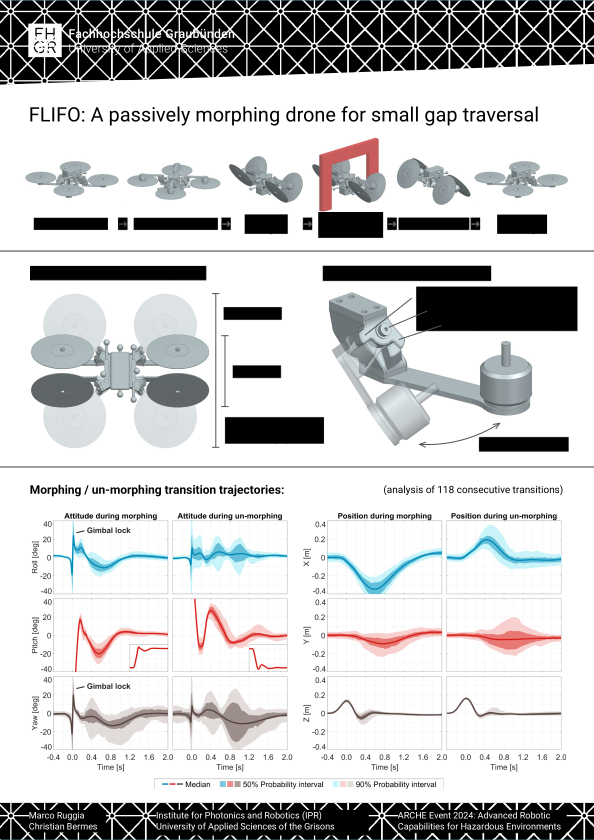
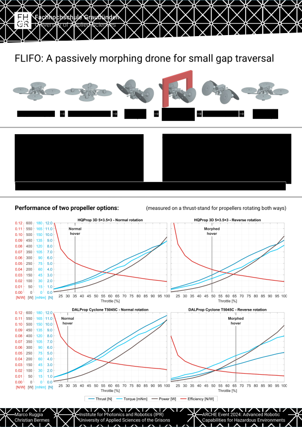

Aerial robotics is an already well established, but still quickly growing field in research. Between the multitude of problems that can be solved with a flying drone are tasks of exploration and inspection in areas unsafe or inaccessible to humans. When these areas lie indoors or in otherwise tightly enclosed environments, it can become necessary for a drone to traverse small gaps. Gap traversal is relatively speaking easy to accomplish, but it does bring with it a design trade-off. The drone needs to be small enough to fit trough the gap, but at the same time it is well known that drones with large propellers are more efficient and thus offer longer flight times.
The aim of this project is to sidestep the gap size vs. flight time trade-off by exploring a novel morphing drone design. A design where the drone can, temporarily and on command, morph into a smaller and less efficient shape to easily traverse a gap. Although, morphing drone designs do not typically come for free. If additional actuators for morphing are needed, then the trade-off is simply shifted to an increase in complexity/weight. Instead, the design that I propose here does not require any additional actuators and still manages to shrink by an unprecedented 50% while maintaining full controllability!
The concept is rather simple: A multirotor drone can fly up-side-down if it reverses its propeller spin direction. In such a configuration the forces acting on the drone arms are also reversed. By intelligently placing hinges on the arms this change can be used to cause the drone to fold together when it flips up-side-down and to unfold when it flips right-side-up. These hinges can be purely passive, only featuring two endstops for each configuration, as it is the propeller forces that actuate them. With this concept the drone can fly like any ordinary multicopter when right-side-up, but once it flips up-side-down it passively folds together becoming significantly narrower. Although once folded, the flight efficiency is greatly reduced. On one hand due to the unfavourable folded geometry and on the other hand due to the reverse spinning propellers. But this disadvantage last only until the gap is traversed and the drone is un-flipped.
In early 2024 I was awarded a grant over 50'000CHF (52'000€) from the science and technology center of the swiss military armasuisse S+T to explore my morphing drone concept. This happened while I was working as a part-time lecturer at the University of Applied Sciences of the Grison FHGR. Many thanks to prof. Christian Bermes, director of studies of "Mobile Robotics", for leveraging his connections with armasuisse so that i could submit my proposal. It is rather clear to me that the proposal likely wouldn't have been considered, if not for that backing.
| Grant proposal: | flifo_proposal.pdf |
In July 2024, 6 months after the project started, results were presented at the ARCHE event (Advanced Robotic Capabilities for Hazardous Environments). These included a live demonstration of the drone, and a poster presentation, which is available below. The posters show data without any comments, so readers are invited to draw their own conclusions on how well the FLIFO drone works. Further results, like details on the construction of the hinge mechanism, control architecture, comparisons to existing designs, access to raw data, source code, etc. will be made available at a later date.
  | ARCHE Poster: | flifo_poster.pdf |
Aerial robotics research projects don't always work, and when they don't, they usually crash. FLIFO performed some 300+ test flights, of which a large majority ended in crashes. Luckily, I tend to build my drones very robustly, so it survived all of them with a few minor repairs. The most spectacular crashes are collected in the crash reel down below. Please enjoy this insight into the more frustrating part of the development process!